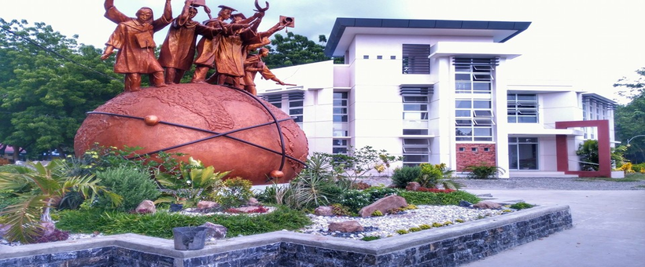

DOrSU na ta!





Davao Oriental State University (DOrSU) was established through Republic Act No. 11033, signed into law by President Rodrigo Roa Duterte at the Malacañang Palace on May 28, 2018. Its conversion is an end-product of House Bill 7007 authored by Congress Representative Joel Mayo Z. Almario and Senate Bill 1617 filed by Senator Joel E. Villanueva. President Emeritus Edito B. Sumile successfully paved the groundwork for the University conversion and was sustained by his successor, Dr. Roy G. Ponce, later named the first University President. Also instrumental to the success of the conversion process is the forward-looking initiative of Hon. Thelma Z. Almario and the dynamic leadership of the Commission on Higher Education (CHED) under Chairperson Julian Prospero E. De Vera III and Commissioner Aldrin A. Darilag, Presiding Chair of the DOrSU Board of Regents, as well as the Committee on Higher and Technical Education (CHTE) chaired by Hon. Mark O. Go.
At the frontline of this historical turning point are the concerted efforts of the University Conversion Technical Working Team in coordination with CHED Regional Office XI spearheaded by Director Maricar R. Casquejo, together with all University faculty, staff, students, Local Government Units (LGUs), and other stakeholders that incessantly worked to comply with the Enrollment and Program Offerings, Faculty Requirements, Research Capability, Learning Resources and Support Structures, and Linkages and Outreach. Their efforts are influential to the CHED Commission En Banc’s (CEB) issuance of Resolution No. 293-2021 dated May 26, 2021, certifying DOrSU’s full compliance to university standards.
With the conversion, the University envisions continually taking part in nation-building by offering advanced technological instruction and pursuing cutting-edge research, extension, and production programs in various fields of science and technology. It played a valuable role in producing professionals and experts who contributed to the advancement of the Davao Region and beyond. Its charter mandates offering of undergraduate, graduate, and postgraduate programs in agriculture and environmental studies, pure and applied sciences, behavioral and social sciences, law, culture and arts, tourism, business, nautical science and maritime transportation, industrial technology, engineering, education and teacher training, communication and information technology, health sciences, developmental management and leadership, and other areas of specialization.
The University’s rich history dates back to 1972 as a Mati Community College (MCC) founded by the then Mati Municipal Mayor Thelma Z. Almario with the Founding Dean of College, Dr. Leopoldo Bravo. With the goal to expand its operation and provide more opportunities to the residents of Davao Oriental and its neighboring provinces, it was converted into Davao Oriental State College of Science and Technology (DOSCST), established on December 13, 1989, by virtue of Republic Act No. 6807. The said conversion was proactively advanced by Hon. Thelma Z. Almario during her tenure as the 2nd Congressional District Representative of Davao Oriental. In 1991, the College transferred to its present 10-hectare campus in Guang-Guang, Dahican, City of Mati, donated by the heirs of Don Jose Corro Martinez. Later, the University expanded services across the Province of Davao Oriental. Campuses were established in San Isidro through the efforts of Hon. Justina MB Yu in November 1997, Cateel under the headship of Hon. Camilo T. Nuñez in June 1999, and Banaybanay founded by Hon. Adalia C. Lopez in June 2015.
The University remains true to its vision of promoting excellence, innovation, and inclusion as a premier institution in the easternmost part of the Philippines. It forefronts the advancement of sustainable development, regenerative science, and future-proofing in all academic disciplines, being an academic steward of world-renowned natural heritage, such as the Mt. Hamiguitan Range Wildlife Sanctuary (MHRWS), the only World Heritage Site in Mindanao inscribed by the United Nations Educational, Scientific, and Cultural Organization (UNESCO), and the Pujada and Mayo Bays listed as the Most Beautiful Bays of the World (MBBW). DOrSU embodies the hopes and aspirations of its founders, leaders, constituents, and the local and indigenous communities that it serves.
Written by: Jhonnel P. Villegas | Date: October 13, 2021
.png)
Institute of Agriculture and Life Sciences of the Davao Oriental State University
.png)
Institute of Business and Public Affairs of the Davao Oriental State University.
.png)
Institute of Computing and Engineering of the Davao Oriental State University
.png)
Institute of Education and Teacher Training of the Davao Oriental State University.
.png)
Institute of Nursing and Allied Health Sciences of the Davao Oriental State University.


It seeks to successfully implement and improve its Quality Management System (QMS) in order to better serve its students and the community, further contributing to nation building.
COPYRIGHT Ⓒ 2022 — Sahed N. Bagay